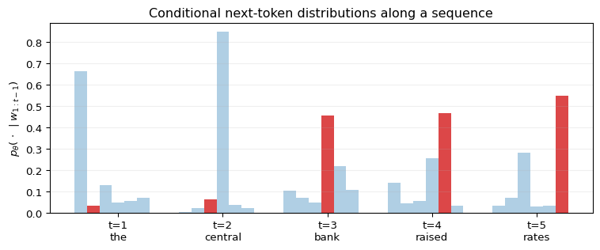
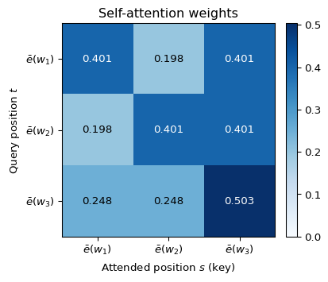
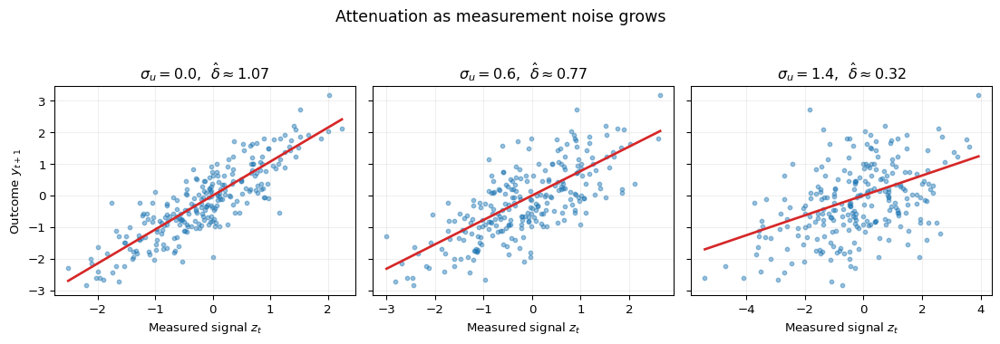
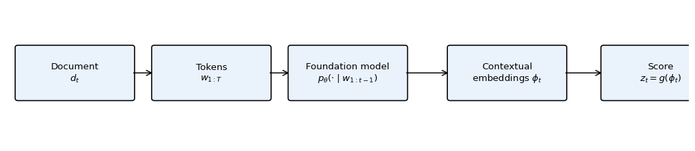

Under active development. A stable version is expected in November 2026. Feedback is welcome by email or via GitHub issues.
16 Foundation Models for Economic Text and Expectations
Experimental Chapter
This chapter is under active development. Content, notation, and exercises may change substantially between revisions.
16.1 Overview
A large and growing share of economic information arrives as text. Central-bank statements, monetary-policy minutes, press conferences, earnings disclosures, conference-call transcripts, analyst reports, and regulatory filings all carry signals about policy stance, risk, and expectations that are not fully captured by any scalar time series. Foundation models — large pre-trained language models such as the GPT and LLaMA families — can process this material and return numerical objects: conditional token probabilities, contextual embeddings, classification scores, or generated responses. A growing econometric literature studies exactly how these objects can be used in policy analysis, forecasting, and measurement without importing the methodological laxity of general-purpose machine-learning practice (Haghighi et al. 2025).
This chapter introduces foundation models as econometric tools, not as chatbots. The chapter has three aims. First, we put language models on formal ground as probabilistic sequence models, so that notions such as cross-entropy and perplexity mean exactly what they do in Information Theory. Second, we recast outputs of a foundation model — scores, labels, embeddings — as noisy measurements of latent economic concepts, which connects immediately to classical errors-in-variables reasoning. Third, we insist that any use of text in forecasting respect a real-time information set: retrieval, labeling, and scoring must be \(\mathcal{I}_t\)-measurable, or the forecast evaluation is not credible.
What this chapter does not do: it is not a software tutorial, not a prompt-engineering guide, and not a survey of transformer internals. Pre-training, fine-tuning, and the engineering details of attention architectures are discussed only to the extent necessary to read and evaluate empirical work that uses foundation models. The minimum technical lineage to keep in view is the transformer architecture (Vaswani et al. 2017), bidirectional transformer representations such as BERT (Devlin et al. 2019), and scaling-era autoregressive language models such as GPT-3 (Brown et al. 2020).
How to read this chapter
Keep three objects separate throughout. A language model \(p_\theta\) assigns probabilities to token sequences; a labeling or scoring rule \(g\) turns a document into a text-derived signal \(z_t\); and a forecasting model uses \(z_t\) together with ordinary predictors to form \(\hat y_{t+h\mid t}\). Good token prediction does not by itself imply good measurement, and good measurement does not by itself imply an admissible real-time forecast.
16.2 Roadmap
We first formalize a language model as a distribution over token sequences and connect its log-likelihood to cross-entropy and perplexity.
We then explain how tokens become representations, introduce self-attention as relevance-weighted averaging, and work through a small numerical example.
Next, we recast prompt-based classification and scoring as measurement and analyze the consequences of the associated measurement error.
After that, we define a real-time information set \(\mathcal{I}_t\) and state the admissibility condition \(D_t \subseteq \mathcal{I}_t\) that retrieval, labeling, and scoring must satisfy.
We then embed text-derived signals into standard predictive regressions and discuss pseudo-out-of-sample evaluation.
We treat synthetic agents — model-generated survey responses — as a disciplined tool for exploring expectations, with explicit limitations.
We close with a summary, including common pitfalls, and four pen-and-paper exercises.
16.3 Language Models as Probabilistic Sequence Models
A language model is a probability distribution over sequences of tokens drawn from a finite vocabulary \(\mathcal{V}\). Tokens are the basic discrete units the model operates on. Depending on the tokenizer, a token can be a word, a subword, a punctuation mark, or a special marker. We will not discuss tokenization in detail. For the econometric analysis below, what matters is that a document of length \(T\) is represented as a sequence \(w_{1:T} = (w_1, \ldots, w_T)\) with each \(w_t \in \mathcal{V}\), and that the model assigns a joint probability to this sequence. We will write realized (observed) tokens in lowercase, \(w_t\), and the corresponding random variables in uppercase, \(W_t\). Adopt the convention \(w_{1:0} := \varnothing\), so that conditioning on \(w_{1:0}\) means conditioning on no prior tokens.
with \(p(w_1 \mid w_{1:0}) := p(w_1)\). A language model is thus a family of conditional next-token distributions. Modern foundation models parameterize these conditionals as \(p_\theta(w_t \mid w_{1:t-1})\) using a large neural network with parameters \(\theta\).
Derivation A: from log-likelihood to perplexity. Taking logs in Equation 16.1,
Suppose the test sequence \(W_{1:T}\) is drawn from a true joint distribution \(p^\star\) that is stationary and ergodic on the vocabulary \(\mathcal{V}\). Then, as \(T \to \infty\), a standard ergodic-theorem argument gives
Under stationarity, the right-hand side of Equation 16.3 does not depend on \(t\). This is exactly the cross-entropy object studied in Information Theory. Perplexity is defined as
Perplexity has the interpretation of an effective vocabulary size per token in the following specific sense: if at every position \(t\) the conditional distribution \(p_\theta(\,\cdot\, \mid w_{1:t-1})\) is uniform on some subset of \(K\) tokens, then \(\bar{\ell} = \log K\) and \(\text{PPL} = K\). In general \(\text{PPL}\) is the geometric mean of the reciprocals of the conditional probabilities assigned to the observed tokens. A lower perplexity means the model assigns, on average, a higher probability to the tokens that actually occur, and is better in a predictive-distribution sense in the terminology of Evaluating Predictive Distributions.
Two remarks matter for econometric work. First, perplexity is computed on a test sequence and is therefore subject to the same pseudo-out-of-sample discipline as any predictive score: the test tokens must not have been seen during training, which for modern foundation models is a nontrivial condition to verify. Second, because \(-\log p_\theta(w_t \mid w_{1:t-1}) \to \infty\) as \(p_\theta(w_t \mid w_{1:t-1}) \to 0\), a single conditional probability below a threshold \(\varepsilon\) contributes at least \(-\log\varepsilon / T\) to \(\bar{\ell}\), and hence multiplies \(\text{PPL}\) by at least \(\varepsilon^{-1/T}\). In consequence, a small number of very low-probability tokens can inflate perplexity substantially; this is relevant when evaluating a language model on crisis-period text whose vocabulary or topic composition departs from the training corpus.
Econometric Interpretation
A low perplexity number answers a narrow question: did \(p_\theta\) assign high probability to the tokens that appeared in this corpus? It does not answer whether a downstream score is an unbiased measure of hawkishness, recession concern, or sentiment, and it does not answer whether the score was available at the forecast origin. Those are separate measurement and information-set questions.
Show the code
import numpy as npimport matplotlib.pyplot as pltrng = np.random.default_rng(3)tokens = ["<s>", "the", "central", "bank", "raised", "rates"]T =len(tokens) -1V =6probs = np.zeros((T, V))observed_idx = np.array([1, 2, 3, 4, 5])for t inrange(T): logits = rng.normal(0.0, 1.0, size=V) logits[observed_idx[t]] +=1.6 p = np.exp(logits - logits.max()) probs[t] = p / p.sum()fig, ax = plt.subplots(figsize=(8.0, 3.4))x = np.arange(1, T +1)width =0.12for j inrange(V): heights = probs[:, j] colors = ["C3"if j == observed_idx[t] else"C0"for t inrange(T)]for t inrange(T): ax.bar(x[t] + (j - V/2) * width, heights[t], width=width, color=colors[t], alpha=0.85if colors[t] =="C3"else0.35)ax.set_xticks(x)ax.set_xticklabels([f"t={t}\n{tokens[t]}"for t inrange(1, T +1)])ax.set_ylabel(r"$p_\theta(\,\cdot\,\mid w_{1:t-1})$")ax.set_title("Conditional next-token distributions along a sequence")ax.grid(True, alpha=0.2, axis="y")plt.tight_layout()plt.show()

Figure 16.1: Next-token factorization schematic. A document is represented as a token sequence \(w_{1:T}\). The model specifies a conditional distribution \(p_\theta(w_t \mid w_{1:t-1})\) over the vocabulary at each position, shown as a bar at position \(t\). The probability the model assigns to the observed token is the height of the dark bar. Sequence log-likelihood is the sum of the log-heights of the dark bars.
What breaks in perplexity when the test corpus contains a regime that was not represented in the training corpus, for example monetary-policy statements written after a structural break in the inflation process?
Suggested Answer
Perplexity is only a meaningful predictive score under some form of exchangeability between training and test tokens. A structural break in the inflation process changes both vocabulary frequencies and conditional patterns, so the cross-entropy \(H(p^\star, p_\theta)\) evaluated on post-break text is computed against a different \(p^\star\) than the one the model was trained under. Perplexity will typically rise, but the more important point is that comparisons across regimes are no longer tests of the same learning problem. This is the same caution that applies to any out-of-sample score under non-stationarity.
16.4 From Words to Representations
Computing the conditionals \(p_\theta(w_t \mid w_{1:t-1})\) requires turning the history \(w_{1:t-1}\) into a numerical summary. Foundation models do this via contextual embeddings: each token position is associated with a vector in \(\mathbb{R}^d\) that summarizes the relevant context. In a causal next-token model, the representation used to score \(w_t\) must be measurable with respect to the preceding tokens \(w_{1:t-1}\); many transformer expositions instead index the hidden state after reading \(w_t\) and use it to predict \(w_{t+1}\). We will keep the econometric conditioning notation \(p_\theta(w_t \mid w_{1:t-1})\) and treat self-attention below as the representation-building mechanism, with causal masking imposed when the task is next-token prediction. Two points matter for the econometric reader.
Embeddings, fixed and contextual. A fixed embedding is a map \(\bar e: \mathcal{V} \to \mathbb{R}^d\) that assigns to each token \(w \in \mathcal{V}\) a single vector \(\bar e(w)\), independent of context. A contextual embedding is a sequence of vectors \(\phi_1, \ldots, \phi_T \in \mathbb{R}^d\), where \(\phi_t\) is produced by a function of the available sequence context (for causal models, only earlier and current positions; for non-causal models, potentially the full sequence \(w_{1:T}\)). Contextual embeddings are what let the word bank be represented by different vectors in “central bank” and “river bank”.
Attention as a weighted average. The dominant mechanism for producing contextual embeddings is self-attention. Consider a sequence of \(T\) tokens with fixed embeddings stacked as rows of a matrix \(E \in \mathbb{R}^{T \times d}\), so that row \(t\) of \(E\) is \(\bar e(w_t)^\top\). Three linear maps \(W_Q, W_K, W_V \in \mathbb{R}^{d \times d}\) produce queries, keys, and values,
\[
Q = E W_Q, \quad K = E W_K, \quad V = E W_V,
\]
with \(Q, K, V \in \mathbb{R}^{T \times d}\). In general implementations, \(W_Q, W_K\) may map to \(\mathbb{R}^{d_k}\) and \(W_V\) to \(\mathbb{R}^{d_v}\) with \(d_k, d_v \ne d\); we take \(d_k = d_v = d\) here to keep notation light. Denote rows of \(Q, K, V\) as \(q_t, k_t, v_t \in \mathbb{R}^d\), so \(q_t = W_Q^\top \bar e(w_t)\) and similarly for \(k_t, v_t\).
The attention output is defined row-by-row. For each query position \(t \in \{1, \ldots, T\}\), the attention weights are
where \(\mathrm{softmax}_{\text{row}}\) indicates that the softmax is applied independently to each row of its argument. The \(\sqrt{d}\) scaling has a simple motivation: if entries of \(q_t\) and \(k_s\) are independent with zero mean and unit variance, then \(\mathrm{Var}(q_t^\top k_s) = d\), and without the rescaling the logits \(q_t^\top k_s\) would grow with \(d\), driving the softmax toward a one-hot vector and its gradient toward zero. We do not discuss multi-head attention, positional encodings, feed-forward blocks, or layer normalization; these are necessary engineering components but they do not change the econometric content.
For a causal language model, Equation 16.5 is replaced by its masked version: position \(t\) can place positive weight only on positions \(s \le t\). The hidden state at position \(t-1\) is then admissible for predicting \(w_t\), because it depends only on \(w_{1:t-1}\). The unmasked formula above is useful for understanding attention as weighted averaging; the causal mask is what aligns the architecture with the conditional probability \(p_\theta(w_t \mid w_{1:t-1})\).
Question for Reflection
Suppose an econometrician computes document embeddings using an unmasked model that lets each token representation depend on all tokens in the same document. Is this automatically a violation of the real-time information set \(\mathcal{I}_t\) when the document itself was published before \(t\)?
Suggested Answer
Not automatically. If the whole document was published before \(t\), using all tokens inside that document is still \(\mathcal{I}_t\)-measurable for a document-level task such as classifying the document’s stance. The problem arises when the task is next-token prediction, where \(p_\theta(w_t \mid w_{1:t-1})\) must not use \(w_t,\ldots,w_T\), or when the embedding model itself was trained or selected using post-\(t\) information. Causal masking is a condition on the within-sequence prediction problem; real-time admissibility is a condition on what objects were available at the forecast origin.
From recurrent states to attention. The previous chapter, LSTM Networks, introduced a fixed-width hidden state \(h_t\) that carries information across time steps. This forces all past relevant information to pass through a bottleneck whose size does not grow with the sequence length. Attention avoids the bottleneck: at position \(t\), the contextual embedding \(\phi_t\) is constructed as an explicit weighted average over representations of admissible positions – all positions in the unmasked formula, and only positions \(s \le t\) in a causal model. The similarity \(q_t^\top k_s / \sqrt{d}\) acts as a learned relevance score: it measures how much position \(s\) should contribute to the representation of position \(t\). Nothing in Equation 16.7 is recurrent.
Derivation B: A Three-Token Self-Attention Example.
Take a sequence of \(T = 3\) tokens in \(\mathbb{R}^2\) (so \(d = 2\)) with fixed embeddings
which has nonnegative entries and rows summing to one. The contextual-embedding matrix is
\[
\mathrm{Att}(E) = A V \approx \begin{pmatrix} 0.802 & 0.599 \\ 0.599 & 0.802 \\ 0.752 & 0.752 \end{pmatrix}.
\]
Two observations. First, row three attends most strongly to position three: because \(\|\bar e(w_3)\|^2 = 2 > \|\bar e(w_1)\|^2 = \|\bar e(w_2)\|^2 = 1\), the diagonal logit \(\bar e(w_3)^\top \bar e(w_3) / \sqrt 2 \approx 1.414\) is larger than the off-diagonal logits \(0.707\), so the softmax places the largest weight (\(0.503\)) on position three itself. Second, rows one and two are symmetric under the exchange of the first two coordinates, and each picks up a nontrivial contribution (about \(40.1\%\)) from token three. This is the mechanism by which a token with large norm — in practice, a token that scores highly under learned queries from other positions — propagates into the representations of neighboring positions.
Show the code
import numpy as npimport matplotlib.pyplot as pltE = np.array([[1.0, 0.0], [0.0, 1.0], [1.0, 1.0]])d = E.shape[1]scores = E @ E.T / np.sqrt(d)A = np.exp(scores - scores.max(axis=1, keepdims=True))A = A / A.sum(axis=1, keepdims=True)fig, ax = plt.subplots(figsize=(4.6, 3.8))im = ax.imshow(A, cmap="Blues", vmin=0.0, vmax=A.max())for i inrange(3):for j inrange(3): ax.text(j, i, f"{A[i, j]:.3f}", ha="center", va="center", color="black"if A[i, j] <0.35else"white")ax.set_xticks([0, 1, 2])ax.set_yticks([0, 1, 2])ax.set_xticklabels([r"$\bar e(w_1)$", r"$\bar e(w_2)$", r"$\bar e(w_3)$"])ax.set_yticklabels([r"$\bar e(w_1)$", r"$\bar e(w_2)$", r"$\bar e(w_3)$"])ax.set_xlabel("Attended position $s$ (key)")ax.set_ylabel("Query position $t$")ax.set_title("Self-attention weights")fig.colorbar(im, ax=ax, fraction=0.046, pad=0.04)plt.tight_layout()plt.show()

Figure 16.2: Attention weights \(A\) from Derivation B. Cell \((t, s)\) shows the fraction of position \(t\)’s output representation that is contributed by position \(s\). Rows sum to one. The diagonal dominance of row three reflects the larger self-similarity of the third token.
Every foundation model we discuss below can be seen as iterating a version of this construction many times, with learned \(W_Q, W_K, W_V\) and additional transformations, and ultimately producing, at each position \(t\), a contextual embedding vector \(\phi_t \in \mathbb{R}^d\). For the econometric analysis in the next sections, \(\phi_t\) is the object that downstream labeling, scoring, and retrieval procedures will consume.
16.5 Foundation Models as Measurement Devices
A common use of a foundation model in macro and finance is to turn a text into a scalar or low-dimensional score. Leading recent examples in the econometric literature are Bertsch et al. (2025), who construct stance measures from Federal Reserve speeches to map central-bank mandates into policy-stance time series, and Siano (2025), who shows that extracting context-sensitive content from earnings-announcement disclosures using LLM methods outperforms the dictionary-based and bag-of-words measures that have dominated the earlier finance literature. Both studies are worth reading as full-length applications of exactly the measurement framing introduced below. Examples of typical latent targets include:
hawkishness of a central-bank statement,
recession concern in monetary-policy minutes,
financial-stability emphasis in a speech,
tone or sentiment of an earnings press release,
disclosure novelty of a conference-call transcript.
In every case, the procedure maps a document \(d_t\) to a number \(z_t = g(d_t)\) using either a prompt (“classify this statement as hawkish, neutral, or dovish”), a probability extracted from the model’s output distribution, or a fine-tuned classification head on top of a contextual embedding.
The measurement view. It is rarely reasonable to treat \(z_t\) as a direct observation of the underlying economic concept. A classical measurement-error model is
where \(s_t\) is the latent concept of interest (the true hawkishness of the statement at time \(t\)) and \(u_t\) is a mean-zero measurement error on the same scale as \(s_t\). The conditional-mean condition \(\mathbb{E}[u_t \mid s_t] = 0\) is a nontrivial normalization: it requires the labeling procedure \(g\) to be unbiased for the latent concept on its natural scale. In practice this is enforced (approximately) by centering and scaling \(z_t\) against reference documents for which the latent concept is believed known; absent such a calibration, \(s_t\) is identified only up to an affine transformation, and the reliability-ratio arithmetic below applies to the standardized rather than the raw signal. Three sources of error in \(u_t\) deserve attention.
Prompt sensitivity. Two prompts designed to elicit the same underlying concept can produce meaningfully different scores, because the conditional distribution the model samples from depends on the full prompt.
Model-version instability. Foundation models are updated. A score constructed with one model version and re-computed with a later version need not agree. If the econometrician uses one version early in the sample and another later, the distribution of \(u_t\) changes with \(t\).
Threshold effects in classification. Asking a model to return a discrete class and then encoding that class as a number (for example in \(\{-1, 0, +1\}\)) discards calibration information near decision boundaries. Errors near the boundary are systematically related to the underlying \(s_t\), violating the conditional-mean condition in Equation 16.8.
The implications are those familiar from classical errors-in-variables. Let
by OLS with \(z_t = s_t + u_t\), \(\mathbb{E}[u_t] = 0\), \(\mathrm{Cov}(u_t, s_t) = 0\), \(\mathrm{Cov}(u_t, \varepsilon_{t+1}) = 0\), \(\mathrm{Var}(s_t) = \sigma_s^2 > 0\), \(\mathrm{Var}(u_t) = \sigma_u^2\). Assume in addition that the joint process \(\{(s_t, u_t, \varepsilon_{t+1})\}\) is strictly stationary and ergodic with finite second moments, so that sample second moments converge to their population counterparts. Then
with reliability ratio \(\lambda := \sigma_s^2 / (\sigma_s^2 + \sigma_u^2) \in (0, 1]\). The coefficient is attenuated toward zero, and \(\lambda \downarrow 0\) as \(\sigma_u^2 \uparrow \infty\), so a noisier language-model label produces a more attenuated slope. Exercise 16.2 asks you to derive this and extend it.
This has a nontrivial consequence for econometric practice. For parameter estimation, \(\hat\delta\) identifies \(\gamma\) only up to the reliability ratio \(\lambda\): the sign of \(\gamma\) is identified whenever \(\lambda > 0\), but the magnitude is identified only if \(\lambda\) itself is identified (for example from a validation subsample on which \(s_t\) is observed, or from repeated labelings that pin down \(\sigma_u^2\)). For forecasting, attenuation is less damaging: under the stated assumptions, \(\hat\delta \to \gamma \lambda \ne 0\) whenever \(\gamma \ne 0\) and \(\lambda > 0\), so \(z_t\) continues to carry predictive content for \(y_{t+1}\) in the sense that \(\mathbb{E}[y_{t+1} \mid z_t] \ne \mathbb{E}[y_{t+1}]\), even though the OLS slope is not an estimate of \(\gamma\). This distinction between prediction and inference is what makes foundation-model-derived signals potentially useful in forecasting while being suspect in causal exercises.
Show the code
import numpy as npimport matplotlib.pyplot as pltrng = np.random.default_rng(7)n =250s = rng.normal(0.0, 1.0, size=n)eps = rng.normal(0.0, 0.6, size=n)y =1.0* s + epssigmas_u = [0.0, 0.6, 1.4]fig, axes = plt.subplots(1, 3, figsize=(11.6, 3.8), sharey=True)for ax, sigma_u inzip(axes, sigmas_u): u = rng.normal(0.0, sigma_u, size=n) z = s + u slope = np.cov(y, z, ddof=0)[0, 1] / np.var(z, ddof=0) ax.scatter(z, y, s=11, alpha=0.45, color="C0") xs = np.linspace(z.min(), z.max(), 50) ax.plot(xs, slope * xs, color="C3", linewidth=2) ax.set_title(fr"$\sigma_u = {sigma_u:.1f}$, $\hat\delta \approx {slope:.2f}$") ax.set_xlabel("Measured signal $z_t$") ax.grid(True, alpha=0.2)axes[0].set_ylabel("Outcome $y_{t+1}$")fig.suptitle("Attenuation as measurement noise grows", y=1.03, fontsize=13)plt.tight_layout()plt.show()

Figure 16.3: Attenuation in a predictive regression with a measured regressor. The left panel shows the latent concept \(s_t\) against the outcome \(y_{t+1}\). The right panels show the observed signal \(z_t = s_t + u_t\) under increasing noise \(\sigma_u\). OLS slopes are reported inside each panel; the true slope \(\gamma = 1\) is attenuated by the reliability ratio \(\lambda = \sigma_s^2 / (\sigma_s^2 + \sigma_u^2)\), which approaches zero as \(\sigma_u\) grows.
Example: Hawkish vs. dovish classification of central-bank text
A common construction in monetary-policy applications passes each Federal Open Market Committee (FOMC) statement, or a broader collection of Federal Reserve speeches as in Bertsch et al. (2025), through a foundation model with a prompt that asks for a label in \(\{-1, 0, +1\}\) or for a continuous stance score aligned with specific mandate dimensions. The resulting series \(z_t\) is then used as a predictor of future interest-rate changes or bond yields. Under the measurement view, \(z_t\) is a noisy estimate of the committee’s latent stance \(s_t\). The reliability ratio \(\lambda\) depends on the prompt, the model version, and the degree of ambiguity of each individual statement. Empirical work based on \(z_t\) should therefore (i) report sensitivity across prompt variants, (ii) hold the model version fixed across the evaluation sample, and (iii) treat regression slopes as attenuated relative to coefficients on \(s_t\).
A schematic of the full measurement pipeline is shown in Figure 16.4.

Figure 16.4: From text to a scalar signal. A document \(d_t\) is tokenized, embedded, and processed by a foundation model to produce contextual embeddings \(\phi_t\) or a conditional distribution \(p_\theta(\cdot \mid d_t)\). A labeling function \(g\) then maps these to a scalar or low-dimensional score \(z_t\). The econometric content of \(z_t\) is its relationship to the latent concept \(s_t\) and to the outcome \(y_{t+1}\); the rest of the pipeline is instrumentation.
Question for Reflection
Suppose two foundation-model versions disagree on 12 % of the hawkish/dovish labels over a 2015–2020 sample. You use version 1 through 2017 and version 2 from 2018 onward in a single predictive regression of bond yields on \(z_t\). Describe what happens to the interpretation of \(\hat\delta\) and what a minimal fix would look like.
Suggested Answer
The measurement error \(u_t\) has a discontinuous distribution at the version-switch date: its variance, and potentially its mean, differ across the two subsamples. If the break is ignored, \(\hat\delta\) is a weighted average of two regimes with different reliability ratios, and the attenuation is ambient and unknown. A minimal fix is to re-label the entire sample with a single frozen model version (ideally the earlier one, and the later one, separately) and report both slopes. A more careful fix would include a regime dummy and an interaction between the regime indicator and \(z_t\), which lets the slope differ by regime; the reliability ratio in each regime is still not identified from the regression alone, but cross-regime differences in the slope point directly to differences in either \(\gamma\) or \(\lambda\) across versions.
16.6 Retrieval and Real-Time Information Sets
Applied use of foundation models in forecasting almost always involves retrieval: selecting a subset of documents on which to run the model, or from which to construct the prompt. This section argues that retrieval is the most important place where text-based forecasting goes wrong, and that the corrective discipline is straightforward to state.
Information sets. Fix a forecast origin \(t\). Let \(\{\mathcal{I}_t\}_{t \ge 0}\) be a filtration on an underlying probability space, where \(\mathcal{I}_t\) is the \(\sigma\)-algebra generated by all variables (numerical series, documents, metadata) whose values had been observed and fixed in their current form by real-world time \(t\). A document \(d\), viewed as a random element of a document space, is \(\mathcal{I}_t\)-measurable if and only if its content had been published and not subsequently revised by time \(t\). This is the textual analogue of real-time vintage discipline for macroeconomic data.
At forecast origin \(t\) the text-based procedure selects a document set \(D_t\) and a set-valued labeling map \(G\) produces a text feature
where \(G\) aggregates the per-document scores \(g(d)\) (for example by averaging, weighting, or concatenating \(g(d)\) across \(d \in D_t\)) into a vector of dimension \(k_z \ge 1\). When \(D_t = \{d_t\}\) is a singleton, \(G(\{d_t\}) = g(d_t)\) reduces to the scalar labeling of Section 16.5.
The admissibility condition. For \(x_t^{\text{text}}\) to be valid as a predictor in a pseudo-out-of-sample forecasting exercise, the document set must satisfy
\[
D_t \subseteq \mathcal{I}_t,
\tag{16.9}\]
and, crucially, the random element \(D_t\) together with the map \(G\) that produces \(x_t^{\text{text}}\) must be \(\mathcal{I}_t\)-measurable.
Derivation C: Why Retrieval Must Be \(\mathcal{I}_t\)-Measurable.
Suppose the forecaster estimates a model of the form \(\mathbb{E}[Y_{t+h} \mid \mathcal{I}_t]\) using features \(x_t \in \mathbb{R}^{k_x}\) that include a text block \(x_t^{\text{text}} = G(D_t)\). The pseudo-out-of-sample forecast at origin \(t\) is
where \(\hat{m}\) is the fitted forecasting map and \(\hat\beta_t\) are regression parameters estimated from data available at time \(t\). (We reserve \(\theta\) for foundation-model parameters throughout the chapter and write the regression coefficients as \(\beta\).)
For \(\hat{y}_{t+h \mid t}\) to be a valid estimate of a real-time forecast, every object on the right-hand side must be \(\mathcal{I}_t\)-measurable. If \(D_t\) is not, then \(x_t^{\text{text}}\) is not, and the forecast is computed from information a real-time forecaster could not have used. A concrete consequence: with leakage, \(\mathbb{E}\bigl[\,\ell(Y_{t+h}, \hat y_{t+h\mid t})\,\bigr]\) differs from the real-time expected loss \(\mathbb{E}\bigl[\,\ell(Y_{t+h}, \hat y^{\text{RT}}_{t+h\mid t})\,\bigr]\), where \(\hat y^{\text{RT}}_{t+h\mid t}\) is the forecast built under genuine \(\mathcal{I}_t\)-measurability. In the common leakage mechanisms below (revised transcripts, post-hoc retrievers, curated summaries), the leaked features are systematically more informative about \(Y_{t+h}\) than their real-time counterparts, so the bias is downward — i.e., the contaminated pseudo-out-of-sample loss understates the real-time loss. The leakage-induced bias need not be downward in general, but we have not seen a published empirical example where it runs the other way.
A second subtlety concerns the retrieval function itself. Suppose \(D_t\) is chosen by taking the top-\(k\) documents nearest to a query under a similarity metric based on an embedding model with parameters \(\psi\), so that \(D_t = \mathrm{Retrieve}(q_t; \psi, \mathcal{A}_t)\), where \(q_t\) is the query at time \(t\) and \(\mathcal{A}_t\) is the document archive available at \(t\). If \(\psi\) was estimated on a corpus that includes documents published after \(t\), then even a set \(D_t \subseteq \mathcal{A}_t \subseteq \mathcal{I}_t\) is selected by a function that depends on post-\(t\) information. The admissibility condition must therefore be strengthened: both \(D_t\)and the retrieval parameters \(\psi_t\) that produce it must be \(\mathcal{I}_t\)-measurable. This is a real constraint in practice, because most off-the-shelf embedding models are trained once on a fixed corpus and then reused across forecast origins, which can only satisfy the constraint if the training corpus is restricted to text available at the earliest \(t\) in the evaluation window.
Concrete sources of leakage.Table 16.1 lists the recurring sources and the conditions they violate. The list is not exhaustive, but each item has appeared in published empirical work.
Table 16.1: Sources of leakage in text-based forecasting, the admissibility condition each violates, and a suggested remediation.
Source of leakage
Condition violated
Suggested remediation
Revised transcripts replace originals
Document identity in \(D_t\) depends on post-\(t\) revisions
Use original release; store timestamp of first publication
Curated summaries written after the event
\(D_t \not\subseteq \mathcal{I}_t\) directly
Exclude summaries; use raw statements only
Benchmark labels constructed from future outcomes
Labels are \(\mathcal{I}_{t+h}\)-, not \(\mathcal{I}_t\)-measurable
Re-label using only pre-\(t\) information
Retriever \(\psi\) trained on full corpus
Retrieval function not \(\mathcal{I}_t\)-measurable
Use retriever trained on pre-sample text only
Foundation model pre-trained on text including post-\(t\) material
\(p_\theta\) itself is not \(\mathcal{I}_t\)-measurable
Disclose cutoff; restrict evaluation window to pre-cutoff
Figure 16.5: Real-time timeline at forecast origin \(t\). The shaded region to the right of \(t\) is the forbidden future: no object produced or revised there may enter \(D_t\). Document \(d_1\) is admissible. Document \(d_2\) is a revision of \(d_1\) published after \(t\) and is not admissible, even though it concerns an event that occurred before \(t\). Document \(d_3\) is a curated summary published after \(t\) and is not admissible. Document \(d_4\) is a news summary published before \(t\) but cites material produced after \(t\); it is admissible as a physical object but contaminates any retriever that weights by similarity to post-\(t\) content.
This is the single most important section of the chapter. Text-based forecasting is attractive because language is expressive, but every failure mode we have seen in macro-forecast evaluation has its textual counterpart, and several new ones — post-hoc retrieval, revised transcripts, pre-training contamination — do not have close macro analogues and therefore require explicit discipline. Ahrens et al. (2025) provide a useful operational example: they study high-frequency market responses to central-bank speeches, and the credibility of their identification hinges on precisely the timestamp discipline formalized above, because the window over which a response is measured must begin strictly after the speech is public and end before any other confounding information arrives.
16.7 Forecast Augmentation with Text-Derived Signals
With measurement and admissibility in hand, we can embed text-derived signals in a standard predictive regression. The workhorse is
where \(y_{t+h}\) is the target (inflation \(h\) quarters ahead, next-day return around an earnings announcement, etc.), \(x_t \in \mathbb{R}^{k_x}\) is a vector of standard predictors (lags, factors, macro indicators), and \(z_t = G(D_t) \in \mathbb{R}^{k_z}\) is a vector of text-derived scores constructed from \(D_t\) subject to the admissibility condition. The coefficient \(\pi \in \mathbb{R}^{k_z}\) generalizes the scalar \(\gamma \lambda\) of Section 16.5 to the multivariate case; when \(k_z = 1\) and no additional \(x_t\) are present, \(\pi\) coincides with the slope \(\delta\) of that section. The scalar reliability-ratio argument has a matrix counterpart (\(\mathrm{plim}\,\hat\pi\) is pre-multiplied by a reliability matrix \(\Sigma_z^{-1} \Sigma_{zs}\) that reduces to \(\lambda\) in the scalar case), but we do not need its explicit form here.
Design choices. Three choices deserve explicit statements, because each can change whether any forecast gain is genuine.
Window. Rolling versus expanding estimation windows have different biases under regime change. The choice should be made up front, not after inspecting out-of-sample performance.
Loss. For point forecasts, use RMSE or MAE; for predictive distributions, use the log score or CRPS as in Evaluating Predictive Distributions. A gain in RMSE that becomes a loss in log score usually reflects miscalibration of uncertainty.
Baseline. The relevant comparison is not model-with-text versus AR(\(p\)). It is model-with-foundation-model-text versus (i) model-with-dictionary-text and (ii) model-with-static-embedding-text. Otherwise any gain might be attributable to text per se rather than to the foundation model.
A minimal evaluation loop. The following code illustrates the structure of a rolling pseudo-out-of-sample evaluation. No API calls are involved; \(z_t\) is treated as given.
The text-augmented model does better here by construction, because \(z_t\) is a noisy but real proxy for the predictive state \(s_t\). In empirical work the gain will typically be smaller and noisier; what matters is that the loop is constructed so that only information from \(\mathcal{I}_t\) enters any object on the right-hand side of Equation 16.10.
Conformal wrappers. If we want prediction intervals rather than point forecasts, the conformal machinery of Conformal Prediction applies, but with a warning. The finite-sample marginal coverage guarantee of split conformal prediction requires exchangeability between the calibration and test non-conformity scores, which is not automatic when the text-derived regressor \(z_t\) is produced by a foundation model whose behavior drifts with model-version updates, prompt revisions, or training-cutoff changes. In time-series settings, the specialized variants discussed in Conformal Prediction (block-wise, adaptive, and online-calibration schemes) are the appropriate tool; the plain split-CP exchangeability argument is fragile here.
Example: Earnings-announcement returns with text
Short-window equity returns around earnings announcements are a canonical testbed; Siano (2025) is the cleanest recent finance application. Construct \(z_t\) as a tone score for the earnings press release and conference-call transcript, passed through a foundation model with a fixed prompt and a fixed model version. Augment a baseline regression on prior earnings surprises, market factors, and industry dummies with \(z_t\). A genuine gain from the foundation model (over a dictionary baseline, over a static-embedding baseline) is evidence that contextual representations capture content the simpler baselines miss; Siano (2025) finds exactly this pattern. A failure to beat the dictionary baseline is also informative: it tells you that, for this sample and target, the additional modeling capacity of the foundation model does not produce additional forecast value. A closely parallel macro exercise is Ahrens et al. (2025), who augment forecasts of short-window market reactions with text-derived features of central-bank speeches; the same design choices (window, loss, baselines) apply.
Question for Reflection
You find that adding \(z_t\) improves in-sample \(R^2\) by 0.08 but does not improve rolling pseudo-out-of-sample RMSE. Give two distinct explanations, one statistical and one data-pipeline, and describe how you would distinguish them.
Suggested Answer
Statistical explanation: \(z_t\) is collinear with \(x_t\) in-sample but adds no conditional information once \(x_t\) is known at the relevant forecast horizon. This is diagnosed by comparing \(R^2\) of a regression of \(z_t\) on \(x_t\) in-sample to the same object in rolling windows; high \(R^2\) implies the in-sample improvement was due to over-fitting additional noise. Data-pipeline explanation: the in-sample construction of \(z_t\) used information not available in real time (revised transcripts, retriever trained on the full corpus), so the in-sample gain is leakage that disappears once admissibility is enforced. The two can be distinguished by re-running the in-sample regression with \(z_t\) constructed under strict admissibility; if the \(R^2\) gain collapses, the problem is pipeline-contamination.
16.8 Synthetic Agents and Expectation Formation
Foundation models can be prompted to produce synthetic survey responses: the econometrician describes a persona — a household with given demographics, a firm with given sector and size, a forecaster with given information set — and asks the model to answer a survey question as that persona. The set of resulting answers \(\{\tilde r_i\}_{i=1}^N\) is sometimes called a set of synthetic agents. Their use in economics is still experimental, and the econometric question is when, if ever, moments of \(\{\tilde r_i\}\) are informative about moments of a real survey \(\{r_i\}\). The closest work to the treatment below is Zarifhonarvar (2026), who generates household inflation expectations with large language models and compares the induced moments with those of the Michigan Survey; the patterns he documents (approximate mean agreement under careful prompting, systematic under-dispersion, underrepresentation of tail respondents) are a natural empirical counterpart to the bias decomposition given below.
A minimal formal setup. Index real survey respondents by \(i\), and write a generic respondent as the pair \((A_i, R_i)\), where \(A_i \in \mathcal{A}\) is a vector of observable persona attributes (demographics, sector, etc.) and \(R_i \in \mathcal{R} \subseteq \mathbb{R}\) is the survey answer. Let \(F\) denote the true joint distribution of \((A_i, R_i)\) on \(\mathcal{A} \times \mathcal{R}\), with persona marginal \(F_A\) and conditional answer distribution \(F(r \mid a)\). The econometrician chooses a synthetic persona distribution\(H\) on \(\mathcal{A}\), draws personas \(\tilde A_i \overset{\text{iid}}{\sim} H\), and for each \(\tilde A_i\) queries the foundation model to obtain a synthetic answer \(\tilde R_i \sim q_\theta(\cdot \mid \tilde A_i)\), where \(q_\theta\) is the conditional answer distribution induced by the foundation model (parameters \(\theta\)) together with the prompt. Here, as elsewhere in the chapter, \(\theta\) denotes the foundation-model parameters; the persona attributes use a distinct symbol \(a\).
A bias decomposition. Assume \(R_i\) and \(\tilde R_i\) are integrable. Define
\[
\mu_q(a) := \mathbb{E}_{q_\theta}[\tilde R \mid \tilde A = a], \qquad
\mu_F(a) := \mathbb{E}_F[R \mid A = a].
\]
The synthetic-sample and real-sample population means are
The first term is a representativeness problem: if the distribution of personas used to prompt the model does not match the persona marginal in the real survey population, the synthetic mean is biased even when the model answers each persona correctly (i.e., even when \(\mu_q \equiv \mu_F\)). The second term is the more fundamental problem: conditional on a persona \(a\), the model’s answer distribution \(q_\theta(\cdot \mid a)\) need not equal the real conditional \(F(\cdot \mid a)\), and \(\mu_q \ne \mu_F\) in general. Both terms can be nonzero even for a capable model and a carefully designed prompt.
Figure 16.6 shows the same decomposition for a two-persona population. The purpose of the figure is not the numerical values; it is to separate the two ways the synthetic mean can be wrong. The left panel changes the persona weights while holding conditional means fixed. The right panel holds the persona weights fixed while changing the model-implied conditional means.
Figure 16.6: Two components of synthetic-agent mean bias in a two-persona example. The left panel shows persona mismatch: the synthetic persona distribution \(H\) overweights group B relative to the real survey distribution \(F_A\). The right panel shows conditional bias: even when \(H = F_A\), the model-implied conditional means \(\mu_q(a)\) differ from the real conditional means \(\mu_F(a)\).
Consequences for empirical practice. Three implications follow.
Synthetic agents should be used primarily for exploring heterogeneity within a population whose marginal distribution is known, not for replacing a real survey sample.
Even within a known population, validating means is not enough. Variances, quantiles, and conditional patterns should be compared to real survey moments where possible; persistent underestimation of variance is a typical failure mode.
Generated answers can be contaminated by training-data artifacts: the model may echo public-opinion distributions that prevailed during training rather than anything about the prompted persona. This is a form of training-cutoff leakage closely related to the discussion of retrieval in Section 16.6.
The Michigan Survey of Consumer Expectations reports cross-sectional distributions of household inflation expectations. Prompting a foundation model with personas drawn from the Michigan demographic marginals (so \(H = F_A\)) produces a set of synthetic one-year-ahead inflation expectations. When \(H = F_A\) the persona-mismatch term in Equation 16.11 vanishes by construction, and any gap between the synthetic and Michigan means is attributable to the conditional-bias term. Comparing conditional means \(\mu_q(a)\) and \(\mu_F(a)\) by age, income, or education bracket localizes the conditional bias across sub-populations. Zarifhonarvar (2026) reports exactly these comparisons: means can be approximately matched with careful prompting, variances are systematically understated, and tail respondents (very high or very low expectations) are under-represented. This is useful information about the model’s calibration, not a statement that synthetic respondents can substitute for the actual survey.
16.9 Summary
Key Takeaways
A language model is a probability distribution over token sequences. Its log-likelihood is a sum of conditional token log-probabilities, its average negative log-likelihood is cross-entropy, and perplexity is the exponential of that average. Perplexity inherits all the interpretational caveats of any predictive score: it requires a well-defined test set and is sensitive to regime change.
Self-attention constructs contextual embeddings as relevance-weighted averages of value vectors. The three-token example in Derivation B shows the mechanism explicitly; everything that follows in a foundation model is a more elaborate version of that construction.
Foundation-model outputs used as regressors are best modeled as noisy measurements of a latent economic concept: \(z_t = s_t + u_t\). The OLS slope in a forecasting regression on \(z_t\) is attenuated toward zero by the reliability ratio \(\lambda = \sigma_s^2 / (\sigma_s^2 + \sigma_u^2)\).
Attenuation matters for parameter estimation but not for the qualitative question of whether \(z_t\) has predictive content. A consistent non-zero slope on \(z_t\) is evidence of predictive content for \(y_{t+h}\), even though the slope is not an estimate of the coefficient on the latent concept.
Retrieval and labeling must be \(\mathcal{I}_t\)-measurable — not only the set of retrieved documents \(D_t\), but also the retriever parameters \(\psi_t\) that produce it and the foundation-model parameters \(\theta\) that consume it. Pre-training contamination is a genuine concern and should be treated as a first-class evaluation constraint.
Synthetic survey responses suffer from both a persona-mismatch bias and a conditional bias; their best use is for within-population heterogeneity exploration, not for replacing a real survey sample.
Common Pitfalls
Treating a classification label as a direct observation of the underlying economic concept. The measurement-error view is almost always more accurate and changes how the resulting regressions should be read.
Using a retriever or embedding model trained on a corpus that overlaps with the evaluation window. Even if retrieved documents themselves predate the forecast origin, the retriever that selects them must also be \(\mathcal{I}_t\)-measurable.
Silently switching foundation-model versions in the middle of a forecast sample. The measurement error \(u_t\) then has a time-varying distribution, and regression coefficients mix regimes.
Evaluating a text-augmented forecast against an AR(\(p\)) baseline only. A dictionary baseline and a static-embedding baseline are necessary to attribute any gain to the foundation model rather than to text in general.
Treating perplexity as a universal quality metric. Perplexity evaluated on a test set whose distribution differs from the training distribution is not comparable across models and can be dominated by a small number of rare tokens.
Reading coefficients on \(z_t\) as causal or structural. Foundation models are noisy measurement devices, not identification strategies.
Validating synthetic agents only by matching an aggregate mean. A correct mean can hide offsetting conditional biases across persona groups and says little about dispersion or tail behavior.
16.10 Exercises
Exercise 16.1: Sequence probabilities, cross-entropy, and perplexity
Consider a vocabulary \(\mathcal{V} = \{a, b, c, d, e\}\) of size \(K = 5\). A language model \(p_\theta\) processes the sequence \(w_{1:8} = (a, b, a, c, d, a, b, e)\) and returns the following one-step-ahead conditional probabilities assigned to the observed token at each position:
\(t\)
Observed \(w_t\)
\(p_\theta(w_t \mid w_{1:t-1})\)
1
\(a\)
0.40
2
\(b\)
0.25
3
\(a\)
0.50
4
\(c\)
0.20
5
\(d\)
0.15
6
\(a\)
0.50
7
\(b\)
0.30
8
\(e\)
0.0001
Part 1. Compute \(\log p_\theta(w_{1:8})\) and the average negative log-likelihood \(\bar{\ell}(w_{1:8}; \theta)\). Use natural logarithms.
Part 2. Compute the perplexity \(\text{PPL}(w_{1:8}; \theta)\) and verify numerically that \(\text{PPL} = \exp(\bar{\ell})\).
Part 3. The token at position 8 is assigned probability \(10^{-4}\). Quantify its contribution to \(\bar{\ell}\) and to \(\text{PPL}\). Discuss whether perplexity is a robust evaluation criterion on text that contains rare events, for example monetary-policy statements issued during a crisis whose vocabulary departs sharply from the training corpus. Your answer should connect to the definition of cross-entropy and to the limit argument that motivates perplexity as an effective vocabulary size.
Exam-level. The numerical computation in Parts 1 and 2 is standard; Part 3 should be the diagnostic.
Hint for Part 3
Compute \(-\log(0.0001) \approx 9.21\) and compare to the average of the other seven terms. Then ask what happens to \(\text{PPL}\) if you replace the last token’s probability with \(10^{-2}\) instead; the change in \(\text{PPL}\) is the diagnostic quantity.
Direct verification: \(\text{PPL} = (0.40 \cdot 0.25 \cdot 0.50 \cdot 0.20 \cdot 0.15 \cdot 0.50 \cdot 0.30 \cdot 0.0001)^{-1/8}\), which evaluates to the same value.
Part 3. The last token contributes \(-\log(0.0001) \approx 9.2103\) to the sum, i.e., \(9.2103 / 8 \approx 1.151\) to \(\bar{\ell}\). If instead the last-token probability had been \(10^{-2}\), the contribution would have been \(\log(100)/8 \approx 0.576\). The difference in \(\bar{\ell}\) is about \(0.576\), translating into a change in \(\text{PPL}\) from about \(9.04\) to about \(\exp(2.2012 - 0.576) \approx 5.08\).
The diagnostic point is that a single rare token shifts perplexity by nearly a factor of two. Perplexity is a geometric mean of reciprocal probabilities, so it is dominated by the smallest assigned probabilities. On crisis-period text, the vocabulary includes tokens that occur rarely or not at all in training; these will typically receive small probabilities under the trained model. Perplexity computed on such text is a valid summary of predictive loss only if the assumption of comparable training and test token distributions holds. Under regime change, cross-entropy \(H(p^\star, p_\theta)\) is computed against a different \(p^\star\) than during training, and the resulting perplexity is not on the same scale as in-distribution perplexity. It is therefore not directly comparable across regimes and should be supplemented with token-level diagnostics (e.g., the fraction of mass placed on tokens with probability below some threshold).
Exercise 16.2: Measurement error in a text-derived signal
Consider an econometric model with latent regressor
Assume \(s_t, u_t, \varepsilon_{t+1}\) are mean-zero and mutually uncorrelated, with \(\mathrm{Var}(s_t) = \sigma_s^2\), \(\mathrm{Var}(u_t) = \sigma_u^2\), and \(\mathrm{Var}(\varepsilon_{t+1}) = \sigma_\varepsilon^2\). The econometrician estimates
Show all steps starting from the OLS normal equations.
Part 2. Now drop the assumption \(\mathrm{Cov}(s_t, u_t) = 0\). Suppose instead \(\mathrm{Cov}(s_t, u_t) = \rho \sigma_s \sigma_u\) with \(\rho \in (-1, 1)\). Re-derive \(\mathrm{plim}\,\hat\delta\) and determine, given \(\gamma > 0\), the sign of the difference relative to Part 1 as a function of \(\rho\). Interpret the case \(\rho > 0\) as directional measurement error: documents with larger latent stance \(s_t\) tend to receive larger measurement errors \(u_t\).
Part 3. A researcher reports a highly significant positive \(\hat\delta\) in Part 1’s setting and concludes that “hawkish monetary-policy statements predict higher future bond yields”. Another researcher argues that because \(\hat\delta\) is attenuated, the conclusion is unwarranted. Evaluate the two positions. Your answer should distinguish clearly between the objective of estimating \(\gamma\) (inference about the latent concept) and the objective of assessing whether \(z_t\) has predictive content for \(y_{t+1}\) (a forecasting statement). Conclude which of the two objectives each researcher is pursuing and which objective the data can address.
Exam-level. Part 1 is a standard derivation; Part 2 requires care with covariance; Part 3 is the econometric-diagnostic part.
Hint for Part 1
Under mutual uncorrelatedness, \(\mathrm{plim}\,\hat\delta_{\text{OLS}} = \mathrm{Cov}(y_{t+1}, z_t) / \mathrm{Var}(z_t)\). Compute each object by substituting the model equations and using the zero-covariance assumptions.
Hint for Part 3
Predictive content is about the joint distribution of \((y_{t+1}, z_t)\): it is enough that \(\mathbb{E}[y_{t+1} \mid z_t] \neq \mathbb{E}[y_{t+1}]\). Inference about \(\gamma\) is about the coefficient on \(s_t\), a different object. A non-zero \(\hat\delta\) is consistent with the first and uninformative about the second.
The denominator is positive because it is the product of two variances. For \(\gamma > 0\), the sign of the difference relative to Part 1 is therefore the sign of \(\rho(\sigma_u^2-\sigma_s^2)\). If \(\rho > 0\), the slope is smaller than the classical-measurement-error slope when \(\sigma_s^2 > \sigma_u^2\), larger when \(\sigma_u^2 > \sigma_s^2\), and unchanged when the two variances are equal. If \(\rho < 0\), the signs reverse.
Interpretation: positive \(\rho\) is not a statement about confidence or smaller absolute error. It means the error is directionally related to the latent stance: high-\(s_t\) documents tend to have positive \(u_t\), so the measured signal exaggerates the stance for high-stance documents, while low-\(s_t\) documents tend to have negative \(u_t\). Depending on the relative variances of signal and error, this covariance can either steepen or flatten the regression on \(z_t\) relative to the classical benchmark.
Part 3. The two researchers are pursuing different objectives. The first is making a forecasting statement: \(z_t\) carries information about \(y_{t+1}\), in the sense that \(\mathbb{E}[y_{t+1} \mid z_t] \neq \mathbb{E}[y_{t+1}]\). A consistent non-zero \(\hat\delta\) in Part 1 is evidence for this, because \(\hat\delta\) converges to \(\gamma \lambda\), which is nonzero whenever \(\gamma \neq 0\) and \(\lambda > 0\). The attenuation does not undermine this conclusion; it only says \(\hat\delta \neq \gamma\).
The second is making an inference statement about the latent concept: the coefficient of \(y_{t+1}\) on \(s_t\) is \(\gamma\), and \(\hat\delta\) does not estimate it consistently. This is correct. Without a reliability correction (or an instrument for \(s_t\), or a validation subsample where \(s_t\) is observed), \(\hat\delta\) cannot be translated into an estimate of \(\gamma\). The second researcher is right to resist the causal-style interpretation.
The data therefore support the forecasting statement but not the inference statement. This is a general feature of foundation-model-derived signals in empirical work: they are usable as predictors, and usable as evidence of predictive content, but are not in themselves estimates of structural coefficients on the latent economic concept.
Exercise 16.3: Real-time information sets and the retriever
Fix the forecast origin $t = $ end of 2019-Q4 (i.e., 2019-12-31). Consider the following documents and artifacts:
\(d_1\): ECB monetary-policy statement, first published 2019-10-24.
\(d_2\): officially revised transcript of the Q&A following \(d_1\), re-published 2020-01-15.
\(d_3\): news summary of \(d_1\), published 2020-02-03, discussing the ensuing market reaction.
\(d_4\): academic working paper released 2019-11-30 that cites \(d_1\).
\(E_\psi\): a sentence-embedding model trained on a general web corpus crawled through 2021-06.
\(p_\theta\): a foundation model whose training cutoff is 2021-09.
The forecaster constructs \(z_t = g(D_t)\) by (i) retrieving from a document archive the top-\(k\) documents most similar to a query “ECB policy stance” under \(E_\psi\), (ii) prompting \(p_\theta\) with those documents to produce a hawkish/dovish score.
Part 1. Determine, for each of \(d_1, d_2, d_3, d_4\), whether the physical document is \(\mathcal{I}_t\)-measurable. State the timestamp that justifies each decision.
Part 2. Suppose the admissibility condition is interpreted strictly: both the document set \(D_t\) and the retriever parameters \(\psi\) that produced it must be \(\mathcal{I}_t\)-measurable. Is the retrieval step admissible as specified? Write down the admissibility condition on the retriever and explain which of its inputs (training corpus, query, similarity metric) violate the condition here.
Part 3. Is the foundation model \(p_\theta\) admissible? Construct a pseudo-out-of-sample protocol that restores validity. Be explicit about (i) which objects must be re-estimated at each forecast origin, (ii) which objects may be held fixed across origins, and (iii) how you would document the resulting protocol so that another researcher could verify admissibility.
Exam-level. Parts 1 and 2 are mostly mechanical once the admissibility condition is taken seriously; Part 3 requires a structured answer.
Hint for Part 2
Think of the retriever as a function whose behavior depends on its parameters \(\psi\). The admissibility condition must apply to the function, not only to its outputs. If \(\psi\) depends on post-\(t\) information, two different forecast origins using the same \(\psi\) are both running a retriever that was not available in real time.
Solution
Part 1.
\(d_1\): published 2019-10-24, before $t = $ 2019-12-31. Admissible in its 2019-10-24 form.
\(d_2\): revision re-published 2020-01-15, after \(t\). Not admissible in its revised form, even though it concerns an event that occurred before \(t\). If the original (pre-revision) transcript was published before \(t\), that original is admissible; the revision is not.
\(d_3\): published 2020-02-03, after \(t\). Not admissible. It also contains information about market reactions that occurred after \(t\), which is a second, independent violation.
\(d_4\): published 2019-11-30, before \(t\). The physical working paper is admissible. The fact that it cites \(d_1\) is fine; citations to earlier documents do not violate the admissibility condition.
Part 2. The retriever as specified is not admissible. The admissibility condition is: for each forecast origin \(t\), the retriever’s parameters \(\psi_t\) must be \(\mathcal{I}_t\)-measurable, i.e., they must have been estimable from information available on or before \(t\).
The violations: (i) \(E_\psi\) was trained on a web corpus crawled through 2021-06, which post-dates 2019-12-31. The similarity metric used for selection at \(t\) therefore depends on future corpora. (ii) The query string “ECB policy stance” is itself admissible if written before \(t\), but the way it is mapped to a vector depends on \(\psi\) and inherits the same violation. (iii) The similarity metric itself (cosine similarity in the \(E_\psi\) embedding space) depends on \(\psi\).
To restore admissibility: replace \(E_\psi\) with a retriever \(E_{\psi_t}\) trained on a corpus restricted to pre-\(t\) text, or use a retriever whose parameters are themselves \(\mathcal{I}_t\)-measurable (e.g., TF-IDF computed on the pre-\(t\) archive).
Part 3. The foundation model \(p_\theta\) is not admissible for the 2019-Q4 forecast origin because its training cutoff is 2021-09. Any knowledge about events between \(t\) and 2021-09 that is encoded in \(\theta\) contaminates \(p_\theta\).
A valid protocol:
(i) Objects re-estimated at each forecast origin \(t\):
the retriever parameters \(\psi_t\), trained on a corpus of documents published on or before \(t\);
the predictive-regression parameters \(\hat\beta_t\) in Equation 16.10;
labeling thresholds if \(z_t\) is a discretized score.
(ii) Objects held fixed across origins (once chosen):
the prompt template used to elicit \(z_t\);
the foundation-model architecture, although the model parameters\(\theta\) must be chosen so that the training cutoff of \(\theta\) precedes every origin \(t\) in the evaluation window;
the preprocessing pipeline (tokenizer, normalization).
(iii) Documentation requirements:
publication timestamps for every document in the archive, together with revision flags;
the training cutoff of \(\theta\), demonstrably before the earliest forecast origin;
the training corpus of \(\psi_t\) at each origin;
the exact prompt template.
If the evaluation window extends back further than the earliest foundation model with a defensible cutoff, the honest conclusion is that a pseudo-out-of-sample evaluation on this window cannot be conducted with current models, and the researcher should either restrict the window or state the limitation explicitly. It is not admissible to use a model whose training cutoff post-dates the forecast origin and hope that the contamination is small.
Exercise 16.4: Persona mismatch and conditional bias in synthetic agents
There are two persona groups, \(A\) and \(B\). Let
\[
F_A(A)=p, \qquad F_A(B)=1-p,
\]
with \(p \in (0,1)\), denote the real survey population. Let
\[
H(A)=h, \qquad H(B)=1-h,
\]
with \(h \in (0,1)\), denote the synthetic persona distribution. The real conditional means of a one-year-ahead inflation-expectations answer are
\[
\mu_F(A)=m_A, \qquad \mu_F(B)=m_B,
\]
while the model-implied conditional means are
\[
\mu_q(A)=m_A+b_A, \qquad \mu_q(B)=m_B+b_B,
\]
where \(b_A\) and \(b_B\) are group-specific conditional biases.
Part 1. Starting from \(\mathbb{E}_{H,q_\theta}[\tilde R]-\mathbb{E}_F[R]\), derive a two-group version of Equation 16.11. Your final expression should separate the bias due to \(h \ne p\) from the bias due to \((b_A,b_B) \ne (0,0)\).
Part 2. Show that reweighting the synthetic personas so that \(H=F_A\) eliminates the persona-mismatch term but leaves the conditional-bias term
\[
p b_A + (1-p)b_B.
\]
Then characterize all pairs \((b_A,b_B)\) for which the aggregate synthetic mean is exactly correct even though at least one group-specific conditional mean is wrong.
Compute the real population mean, the synthetic population mean, the total bias, and the two terms in the decomposition from Part 1. Verify that the decomposition adds up exactly.
Part 4. Suppose the econometrician has access only to the aggregate real survey mean and tunes the prompt until, with \(H=F_A\), the model-implied conditional means become
\[
\mu_q(A)=3.3, \qquad \mu_q(B)=5.3.
\]
Using \(p=0.7\), \(m_A=3\), and \(m_B=6\), show that the aggregate synthetic mean exactly matches the real aggregate mean even though both group-specific conditional means are wrong. Explain the identification problem: what can and cannot be learned about \((b_A,b_B)\) from a single aggregate moment?
Exam-level. Parts 1 and 2 require a formal decomposition and characterization; Parts 3 and 4 apply the result to diagnose what aggregate validation of synthetic agents can and cannot establish.
\[
\begin{aligned}
B
&= \{h(m_A+b_A)+(1-h)(m_B+b_B) \\
&\quad - p(m_A+b_A)-(1-p)(m_B+b_B)\} \\
&\quad + \{p(m_A+b_A)+(1-p)(m_B+b_B)-p m_A-(1-p)m_B\} \\
&= (h-p)(m_A+b_A)+\{(1-h)-(1-p)\}(m_B+b_B) \\
&\quad + p b_A+(1-p)b_B \\
&= (h-p)\{(m_A+b_A)-(m_B+b_B)\}
+ p b_A+(1-p)b_B.
\end{aligned}
\]
The first term is the persona-mismatch bias: it is zero when \(h=p\). The second term is the conditional bias averaged over the real persona distribution.
Part 2. If \(H=F_A\), then \(h=p\) and the first term in Part 1 vanishes. The remaining bias is
\[
p b_A+(1-p)b_B.
\]
The aggregate mean is exactly correct if and only if
\[
p b_A+(1-p)b_B=0.
\]
Solving for \(b_B\) gives
\[
b_B=-\frac{p}{1-p}b_A.
\]
Thus aggregate correctness does not imply \(b_A=b_B=0\). It only restricts the conditional-bias vector to a one-dimensional line. For any nonzero \(b_A\), choosing \(b_B=-p b_A/(1-p)\) produces a correct aggregate mean with two incorrect group-specific means.
Part 3. The real population mean is
\[
\mathbb{E}_F[R]=0.7\cdot 3+0.3\cdot 6=3.9.
\]
The model-implied conditional means are \(\mu_q(A)=4\) and \(\mu_q(B)=5\). The synthetic population mean is
The aggregate mean matches exactly. But the conditional biases are
\[
b_A=3.3-3=0.3, \qquad b_B=5.3-6=-0.7,
\]
which are both nonzero and satisfy \(0.7(0.3)+0.3(-0.7)=0\).
The identification problem is that one aggregate moment provides only one equation in the two unknown conditional biases \((b_A,b_B)\). It can establish the weighted restriction \(p b_A+(1-p)b_B=0\), but it cannot establish \(b_A=0\) and \(b_B=0\) separately. Therefore, validating synthetic agents by matching a single aggregate survey mean is insufficient: the procedure may still misrepresent subgroup means, heterogeneity, variances, and tail probabilities.
References
Ahrens, Maximilian, Deniz Erdemlioglu, Michael McMahon, Christopher J. Neely, and Xiye Yang. 2025. “Mind Your Language: Market Responses to Central Bank Speeches.”Journal of Econometrics 249: 105921. https://doi.org/10.1016/j.jeconom.2024.105921.
Bertsch, Christoph, Isaiah Hull, Robin L. Lumsdaine, and Xin Zhang. 2025. “Central Bank Mandates and Monetary Policy Stances: Through the Lens of Federal Reserve Speeches.”Journal of Econometrics 249: 105948. https://doi.org/10.1016/j.jeconom.2025.105948.
Brown, Tom B., Benjamin Mann, Nick Ryder, Melanie Subbiah, Jared Kaplan, Prafulla Dhariwal, Arvind Neelakantan, et al. 2020. “Language Models Are Few-Shot Learners.” In Advances in Neural Information Processing Systems 33, 1877–1901.
Devlin, Jacob, Ming-Wei Chang, Kenton Lee, and Kristina Toutanova. 2019. “BERT: Pre-Training of Deep Bidirectional Transformers for Language Understanding.” In Proceedings of the 2019 Conference of the North American Chapter of the Association for Computational Linguistics: Human Language Technologies, 4171–86. https://doi.org/10.18653/v1/N19-1423.
Haghighi, Maryam, Andreas Joseph, George Kapetanios, Christopher Kurz, Michele Lenza, and Juri Marcucci. 2025. “Machine Learning for Economic Policy.”Journal of Econometrics 249: 105970. https://doi.org/10.1016/j.jeconom.2025.105970.
Siano, Federico. 2025. “The News in Earnings Announcement Disclosures: Capturing Word Context Using LLM Methods.”Management Science 71 (11): 9831–55. https://doi.org/10.1287/mnsc.2024.05417.
Vaswani, Ashish, Noam Shazeer, Niki Parmar, Jakob Uszkoreit, Llion Jones, Aidan N. Gomez, Lukasz Kaiser, and Illia Polosukhin. 2017. “Attention Is All You Need.” In Advances in Neural Information Processing Systems 30, 5998–6008.